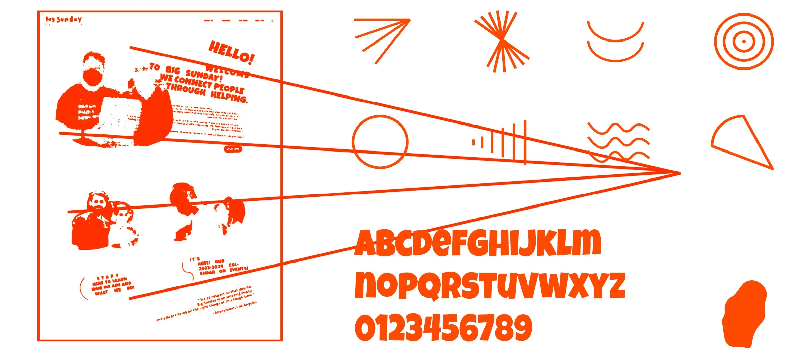
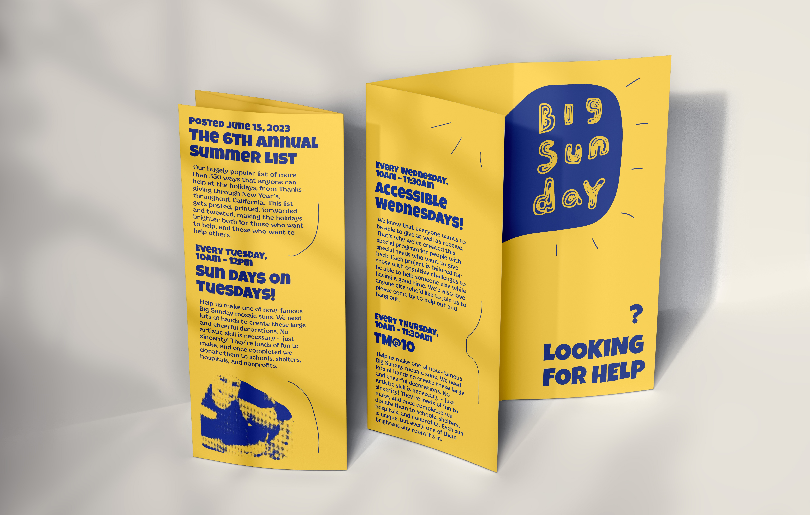
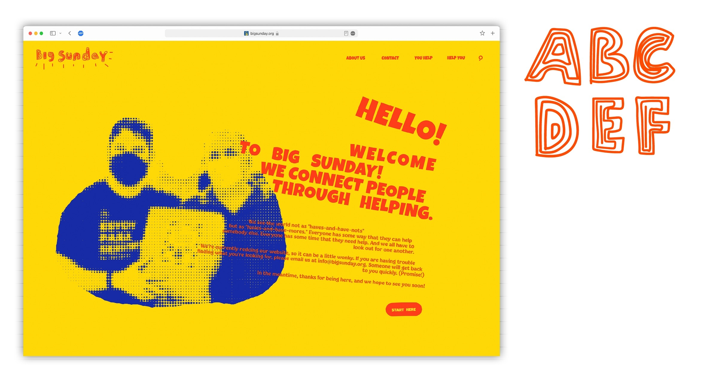

Client: Big Sunday
Delivery: Jan 2024
Big Sunday is a non-profit organization that has been making a significant impact in the realm of community service and volunteering. Founded in 1999 by David Levinson, this Los Angeles-based NPO has been dedicated to fostering a sense of unity and social responsibility through a wide array of programs and events.
Big Sunday's mission is to bring together diverse communities and individuals to engage in acts of kindness and goodwill. They offer a broad spectrum of volunteer opportunities, ranging from food drives and home repairs to educational initiatives and arts projects. By connecting people with various backgrounds and skill sets, Big Sunday has successfully created a culture of giving and sharing that transcends socio-economic and demographic boundaries.
My strategy is to infinitely amplify extremely basic aspects: friendly, helpful, and approachable, I visualized all the keywords I got from company value and mission and transformed them into a layout system instead of a strait graphic. And use this form to drive the identity.


